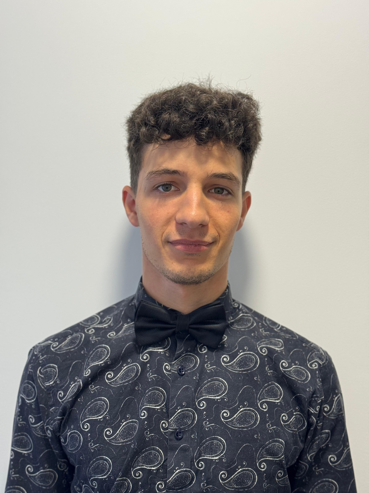

Ricardo Dobroiu

I study Robotics in Oradea, but my hometown is Baia Mare.
My passion is inclined toward technology and development altought I am at the beginning.
My objective is to achieve strong programming and web developing skills.
Education
- Robotics at University of Oradea (2022-present)
- Biology-chemistry at "Emil Racovita" High School in Baia Mare (2018-2022)
Work experience

- Period: October 2023-June 2024 (9 months)
-
Tasks:
- Design sensors using Fusion360 and sometimes Solidworks
- Create de 2D drawings for later machining
- Calibrate the sensors to be ready for delivery
- 3D printing of the prototypes and preparation for testing
- Skills involved: attention to details, stress resilience

- Period: February 2023-August 2023 (7 months)
-
Tasks:
- Prepare the bakery products by the instructions
- Maintain a clean workspace
- Manage the stocks in order to fulfill the requirements
- Serve the clients in a polite and prompt way
- Skills involved: customer service, comunication, sales, atention, teamwork

- Period: June 2022-January 2023 (8 months)
-
Tasks:
- Customer service activity working at the cash register
-
Prepare all products offered in the menu according to demand
and with increased attention to standards, procedures and quality
- Maintaining cleanliness at the workplace
- Skills involved: customer service, comunication, atention, teamwork, stress resilience
More